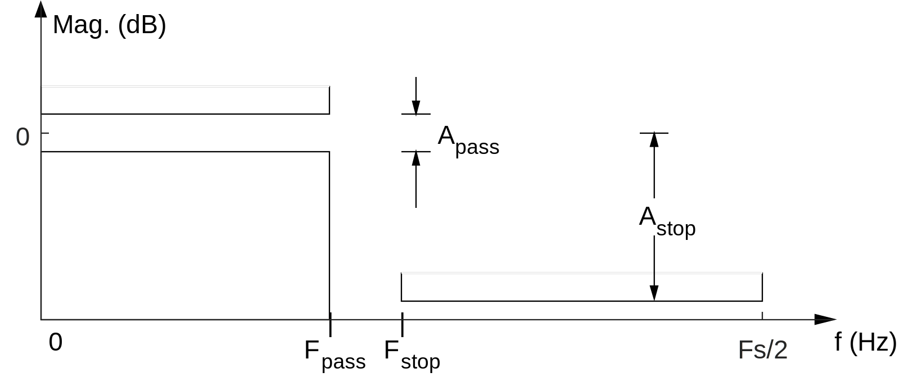
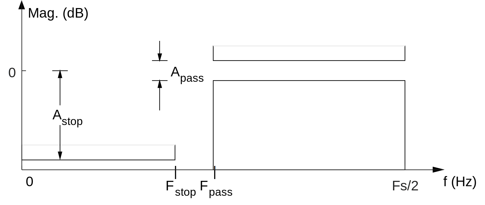

LTI filters and frequency selectivity¶
Linear time-invariant (LTI) systems have many useful properties. We can utilize these properties to design frequency selective filters.
Mathematical definitions¶
Additivity
Let \(x_1(t)\) and \(x_2(t)\) be arbitrary input signals to a system \(\mathcal{S}\). The system satisfies additivity if
Homogeneity
Let \(x(t)\) be an arbitrary input to a system \(\mathcal{S}\). The system satisfies homogeneity if, for any constant \(a\),
Time-invariance
Let \(x(t)\) be an arbitrary input to a system \(\mathcal{S}\) and let \(y(t) = \mathcal S \{ x(t) \}\) be the corresponding output. The system \(\mathcal S\) is time-invariant if, for any time shift \(\tau\),
Linear time-invariant (LTI)
A system is linear time-invariant (LTI) if it satisfies the additivity, homogeneity, and time-invariance properties. A common way for a system to fail to violate these properties is if the system has has nonzero initial conditions.
Properties of LTI systems¶
An LTI system is uniquely characterized by its impulse response. The Frequency response of an LTI system is the Fourier transform of its impulse response.
Impulse response and convolution¶
Continuous time
A continuous time impulse, (also known as the Dirac delta) can be defined as a unit area pulse in the limit that it’s duration approaches zero.
If a system is LTI, then its impulse response \(h(t) = \mathcal S \{ \delta(t) \}\) uniquely characterizes the system. The output \(y(t)\) of an LTI system is the convolution between the input \(x(t)\) and the system’s impulse response \(h(t)\).
Discrete time
A discrete time impulse, (also known as the Kronecker delta) can be defined as a piecewise function.
If a system is LTI, then its impulse response \(h[n] = \mathcal S \{ \delta[n] \}\) uniquely characterizes the system. The output \(y[n]\) of an LTI system is the convolution between the input \(x[n]\) and the system’s impulse response \(h[n]\).
Frequency response¶
Complex exponentials are eigenfunctions of LTI systems. Combined with the previous property, This allows us to uniquely characterize a system by its frequency response.
Eigenfunctions
If application of the system \(\mathcal S\) to the signal \(x(t)\) results in scaling only ( i.e. \(\mathcal S \{x(t)\} = \lambda x(t) \) for some constant \(\lambda\) ) then we say that \(x(t)\) is an eigenfunction of the system and \(\lambda\) is the corresponding eigenvalue.
Continuous time
If the input to an LTI system is a complex exponential \(x(t) = e^{j \omega t}\), then the corresponding output is
where \(H(j\omega)\) (called the frequency response) is the Fourier transform of the impulse response or, equivalently, the Laplace transform of the impulse response evaluated as \(s=j\omega\).
Discrete time
If the input to an LTI system is a complex exponential \(x[n] = e^{j \omega n}\), then the corresponding output is
where \(H(e^{j\omega})\) (called the frequency response) is the Discrete-time Fourier transform of the impulse response or, equivalently, the Z transform of the impulse response evaluated at \(z = e^{j\omega}\).
We often write \(H(\omega)\) instead of \(H(j\omega)\) or \(H(e^{j\omega})\).
Magnitude and phase response¶
The frequency response is, in general, complex valued. Typically, we represent it in terms of its magnitude and phase.
where \(\text{atan2}\) is the two argument arctangent.
It is common to use the magnitude/phase representation when measuring and plotting the frequency response of a system. Typically, the magnitude response is expressed in decibels
In MATLAB, the freqz function will calculate and plot the magnitude and phase response of a discrete-time LTI system.
Frequency selectivity¶
The goal of a filter is to suppress or attenuate some signal components while retaining or boosting others. We often group LTI filters into six categories based on their frequency selectivity, i.e. the arrangement of frequency bands that are boosted relative to the bands which are attenuated.
Lowpass¶

Continuous time example: averaging filter
body
Discrete time example: averaging filter
body
Highpass¶

Continuous time example: differentiator
body
Discrete time example: first-order difference
body
Allpass¶
Allpass filters have a flat magnitude response but affect the signal’s phase. Two common examples are the Hilbert transform and the ideal delay.
When an equalizer is applied to correct for distortion, the cascade of the original system and the equalizer may be modeled as an all-pass filter.
Continuous time example: Hilbert transform
body
Discrete time example: Delay
body